Clocking
卡片显示星期、日期、Time、Cost Center 和 Excp；详情包含九个字段。

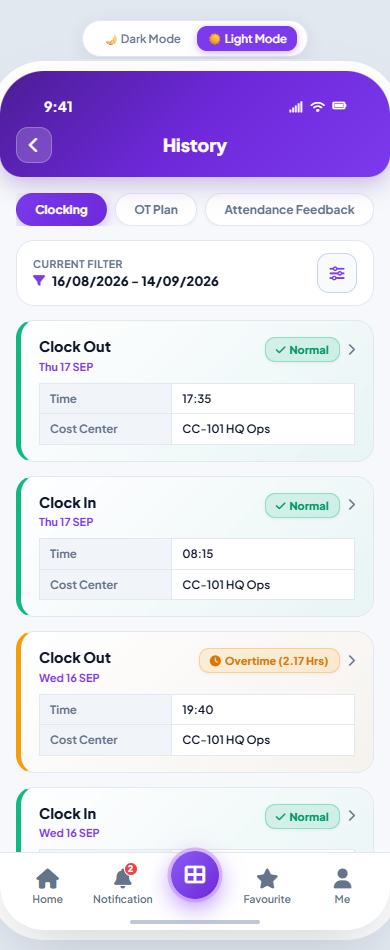

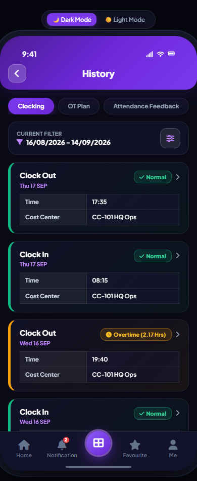

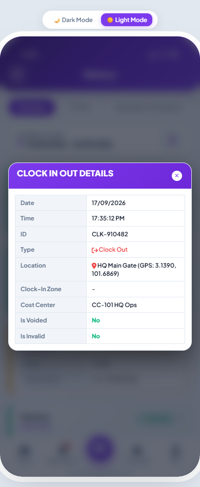

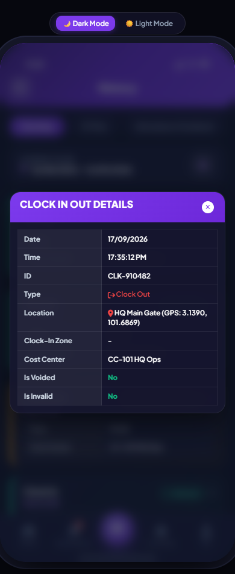
OT Plan
完整 OT 字段、独立的 Start Time／End Time、Break Hours、Plan Hours、Leave Credit、Transport、Approver Comments 和附件。

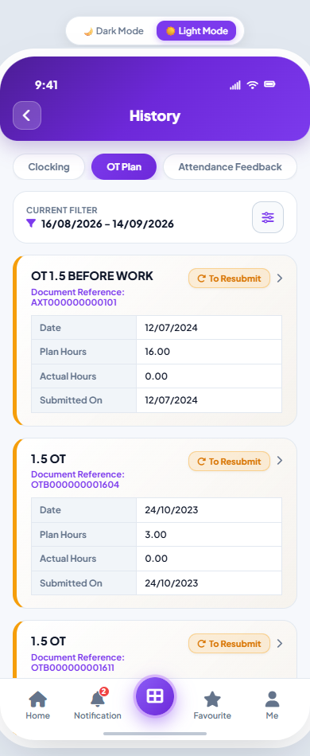

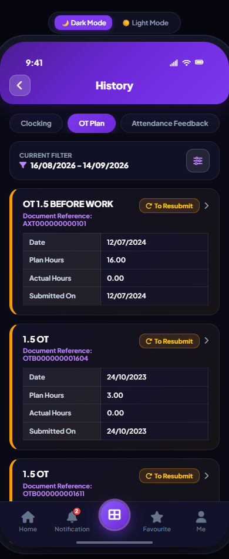

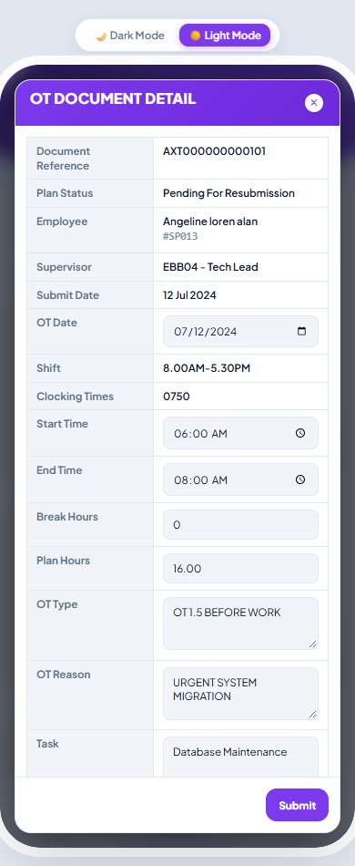

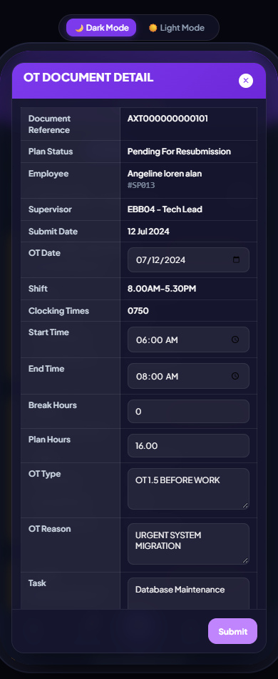

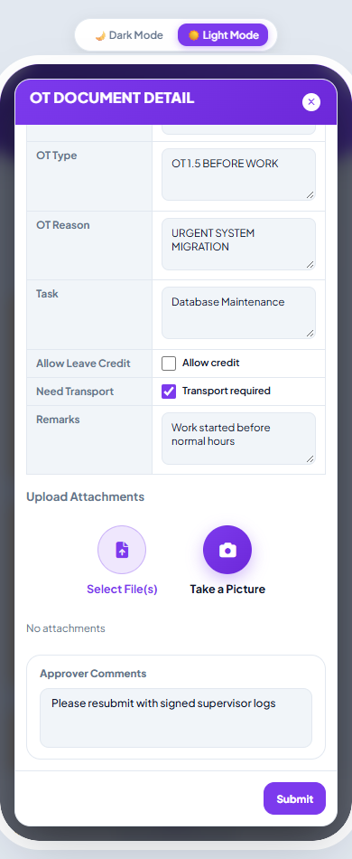

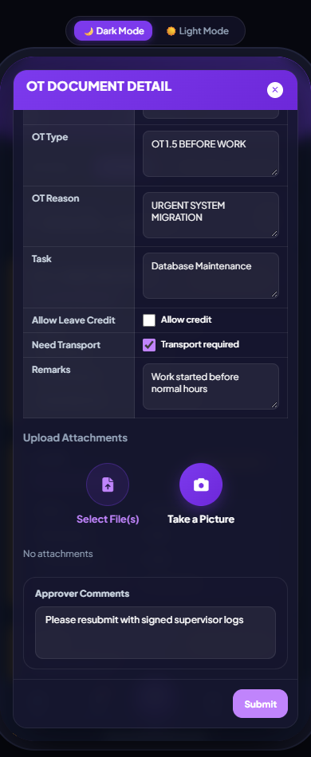
Attendance Feedback
原时间与修改后时间、完整员工及提交信息、Shift／Time 修改原因、Remarks、Approver Comments、附件及操作按钮。

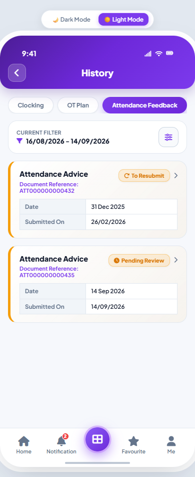

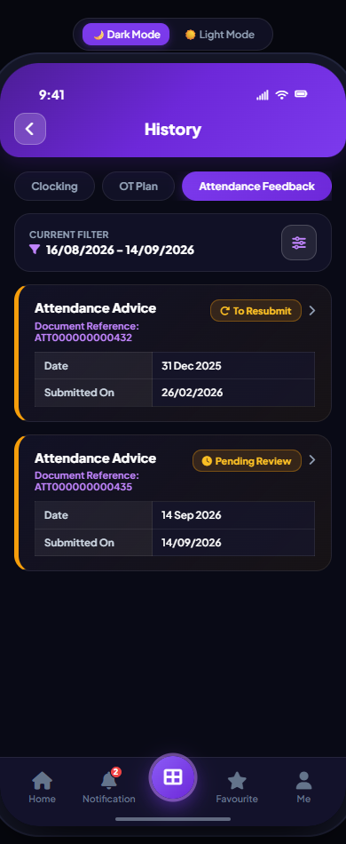

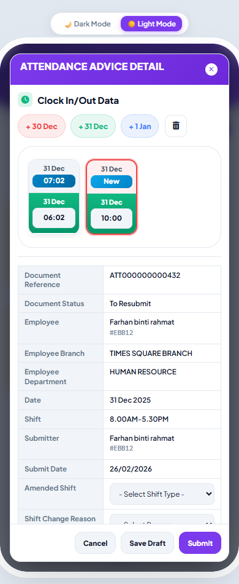

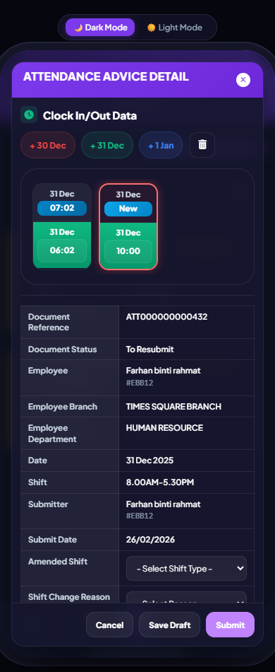

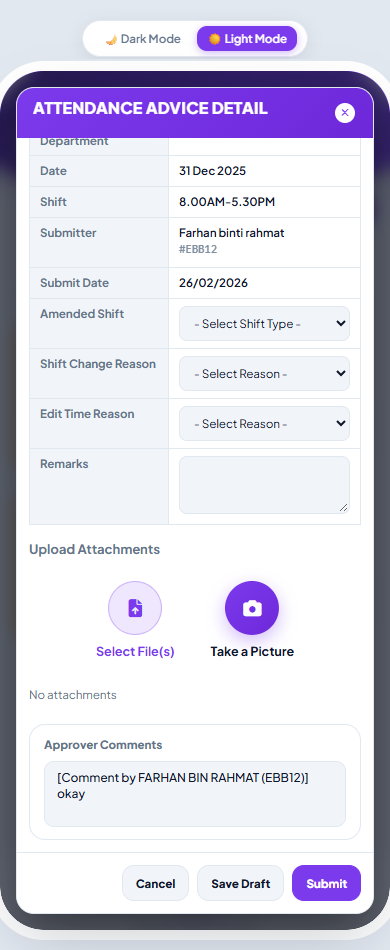

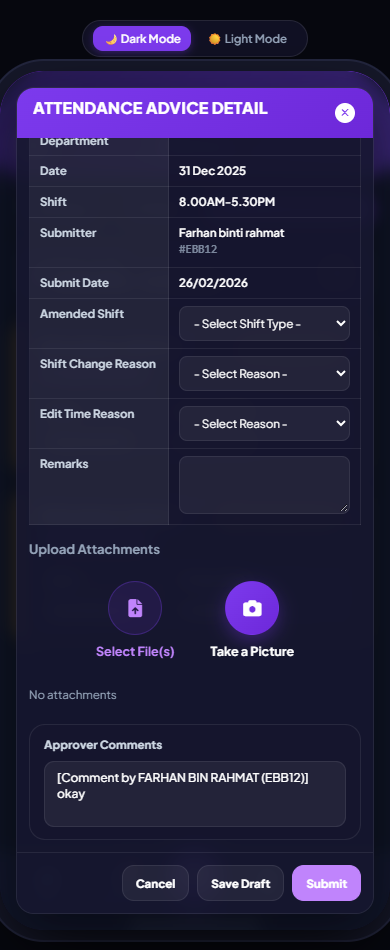